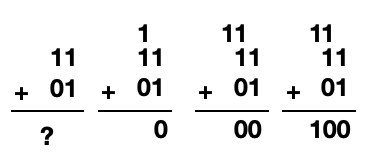

How can computers do math?
Computers aren't thinking machines - there is no magic in the binary, they're just dense piles of simple electronic components. In this section we'll look at how computers perform simple math equations as a way to explore this concept.Logic Gates
Inside of a computer's CPU, there is a special component called an Arithmatic Logic Unit (ALU). The ALU's job is to take a series of electrical signals through some wires, and then produce a corresponding output on other wires. The input electricity represents binary numbers and the math operation to be performed, and the output is the result of that operation. Rather than being monolithic, ALU's are composed of smaller electronic units wired together, each expertly performing a specific operation. One such building block is known as a logic gate.Logic gates take several wires (holding a high or low signal to represent a 0 or 1), and produce a simple output based on the input. Let's look at three common ones:
- AND gates will only produce a high power reading if both inputs are also high (both one AND The other, hence the name.)
- An OR gate will take two wires, and if either one OR the other has a high power it will produce a high on the output.
- Finally, a XOR gate will be high if (and only if) ONLY one of the input wires is high.

The wiring behind these blocks is dead simple - just a matter of some thought and attention. For example, we can create an AND gate using two switches and a battery. When both inputs to the gate are high, both electronically triggered switches close, and the power is able to flow from the battery through to the output.
This is all well and good, but what does this have to do with math? To answer that, we'll need to use these gates as building blocks for something slightly more complicated. We also need to remember how binary numbers differ from our every-day base 10 decimal numbers:
Decimal (Deca means 10)
Base 10 counting
digits span from 0 - 9
0 1 2 3 4 5 6 7 8 9
10 11 12 13 14 15 16 17 18 19
Binary (Bi means 2)
Base 2 counting
digits span from 0 - 1 (each number is often called a 'bit'
0 1
10 11
Base 10 counting
digits span from 0 - 9
0 1 2 3 4 5 6 7 8 9
10 11 12 13 14 15 16 17 18 19
Binary (Bi means 2)
Base 2 counting
digits span from 0 - 1 (each number is often called a 'bit'
0 1
10 11
As we can see, any of our every day numbers can be represented in binary using 0's and 1's. The strategy here is that we will strip off those numbers one by one and pass them through a series of carefully chosen logic gates. This strategy is just like what we learned in our childhood math classes - look at the numbers one by one, and then merge the results all together at the end.
In our math problems, we perform the operation (in this case adding) on the numbers one by
one, and carry the result to the next place on top as needed.

In binary it's exactly the same. We perform the operation, and carry the remainder. It's just a
bit more boring, because we are using only zeroes and ones.
Building an Adder
Let's start putting together one of these specialized components in the ALU. Addition is the simplest, so it's a good place for us to start. First, we need to make something called a "half adder". Like the name suggestes, a half-adder is half of what we need to make an adding machine out of logic gates.Remember: we will look at each digit - a 0 or 1 - in our binary numbers one by one. We will be broadcasting high power on a wire to represent 1's, and low power to represent 0's.
To make our half adder, we need 4 parts:
- A wire representing the first digit in the first number to be added. Labeled here as Number A.
- A wire representing the first digit in the second number to be added. Labeled here as Number B.
- a XOR gate
- an AND gate

If we look back up to our example of hand-calculating addition. We can see that the XOR will give us a 1 or a 0 to put at the bottom of the equation, and the AND figures out if we need to put a 1 on top of the equation as a remainder (also known as a carry).
That may solve adding one set of digits, but how do we add more? Remember, computers are just stacks of simple electronic components - so lets start with our half-adder and build it up.
Our half-adder doesn't have an input wire for the remainder/carry on top of the equation, so let's start by adding that, (we'll do something with it later down the pipeline.)
Now we have our full-adder! It can add two numbers and include a remainder from a previous calculation... How is that helpful? Once again, we just need to continue piling things on. If we link a half adder with some full adders, we can finally start adding real multi-digit numbers!
As we can see, we need an adder for each digit in our number. But notice! We have a warning at the end of our chain - we carried out a digit and didn't add it to the end of our number. What's that about?
In all computers, numbers have a maximum size. For older computers this is 32 (and even older or simpler computers were smaller - gameboys for example were only 8!) and newer computers this is 64. This is why you see terms like 32bit or x64 on computers (or 8-bit mentioned for retro-looking art), it's referring to the maximum size of numbers. (This is also why newer programs can't run on older computers - among a few other things, there just aren't enough adders in their ALUs!)
When we run into this issue, we call it an 'integer overflow'. We had too many bits and they came spraying out of the end of our adder chain. Programmers who work with the deepest parts of computers will often check if there is a 1 in ALUs trash after a math operation, and then perform some careful work to recover their math.
In Conclusion
Computers stack circuits together to make electricity behave a certain way. When we make our electricity look like two binary numbers on one side of a stack of electronics, the other side will broadcast some electricity that looks like the result of a math operation. There's no magic, just a ridiculous amount of simple steps carefully strung together.The rest of the computer is the same. For every mysterious behavior, there is another sky-high pile of electronics. This is why computers drive towards smaller and smaller chips - as our piles grow bigger it takes longer for the electricity to pass all the way through them. By making the stack smaller we can reduce the time, and therefore make our computers run faster.
When computers were simpler, people were familiar with the entire stack - all the way down to the wires. However as these strings of electronics have grown longer and longer, engineers have specialized and focused on just one part of the chain. Nowadays, people who write computer software software swim across the surface of computers hardly knowing these electronics at all.
In our next section we will explore how software became decoupled from electronics - which was the result of the advent of compilers and interpreters.
<- Back to How Computers Work